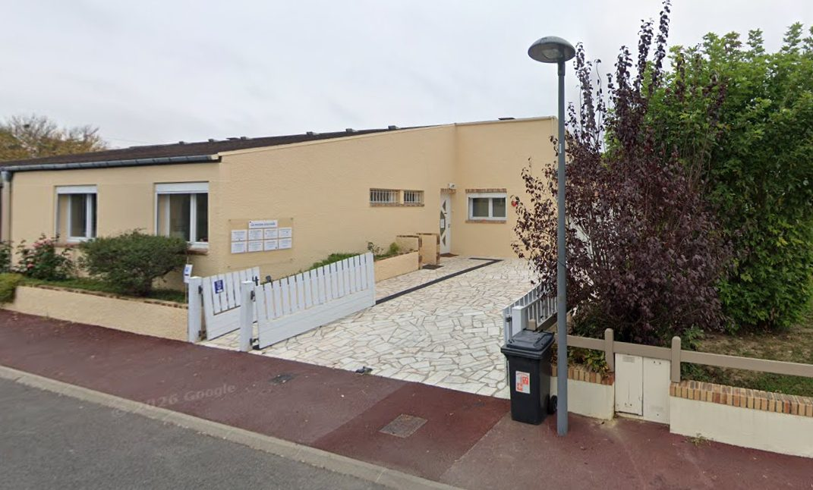

Évaluation, diagnostic et accompagnement personnalisé des troubles cognitifs et du neurodéveloppement. Enfants, adolescents, adultes et seniors.
Alexia Pacas, neuropsychologue clinicienne spécialisée dans l'évaluation des fonctions cognitives
Vous pouvez consulter un neuropsychologue avec ou sans prescription médicale.
Le neuropsychologue évalue et prend en charge les troubles cognitifs, émotionnels et comportementaux liés à des dysfonctionnements du cerveau. Son rôle est d’analyser les difficultés rencontrées par les patients afin de mieux comprendre leur impact sur le quotidien et d’apporter des solutions adaptées.
Toute personne s’interrogeant sur ses capacités cognitives, en demande de suivi psychologique et/ou de remédiation cognitive, d'aide et de conseils (enfants, adolescents, adultes et seniors). Si le consultant présente des troubles cognitifs d’origine neurodéveloppementale, neurologique ou psychiatrique.
Je réalise des bilans neuropsychologiques pour évaluer le fonctionnement intellectuel, les fonctions cognitives (mémoire, attention, langage, etc.), ainsi que dans le cadre du diagnostic du TDAH (trouble déficit de l'attention avec ou sans hyperactivité) et du TSA (trouble du spectre de l'autisme).
Quelques repères pour vous aider à identifier ce qui peut amener à consulter un neuropsychologue
Plusieurs situations peuvent amener à s'interroger sur le fonctionnement cognitif d'un enfant et à envisager un bilan neuropsychologique.
Difficultés attentionnelles et/ou hyperactivité (TDA/H)
Un enfant qui semble souvent « ailleurs », qui a du mal à terminer une tâche ou ses devoirs, qui perd fréquemment ses affaires ou oublie les consignes, qui bouge sans cesse ou a du mal à rester assis, ou encore qui répond de façon impulsive sans attendre la fin d'une question. Ces signes deviennent significatifs lorsqu'ils persistent depuis plusieurs mois, se manifestent à la fois à la maison et à l'école, et gênent le quotidien de l'enfant.
Trouble du spectre de l'autisme (TSA)
Des particularités dans la communication et les interactions sociales (peu de contact visuel, difficultés à partager un intérêt ou une émotion, retard de langage), des comportements répétitifs ou des routines rigides, des intérêts restreints, ou une sensibilité inhabituelle aux bruits, textures ou lumières. Ces signes sont le plus souvent observés avant 3 ans, mais peuvent aussi être repérés plus tardivement.
Difficultés scolaires ou questionnement sur le fonctionnement intellectuel
Des résultats scolaires en décalage avec les efforts fournis, une lenteur ou des difficultés de mémorisation, de raisonnement ou de concentration, ou encore un questionnement des parents ou des enseignants sur un éventuel haut potentiel intellectuel ou des difficultés d'apprentissage.
Ces informations sont données à titre indicatif, à partir des repères publiés par la Haute Autorité de Santé, l'Inserm et la Fondation Alzheimer, et ne remplacent pas un avis médical. Se reconnaître dans plusieurs de ces signes ne signifie pas qu'un trouble est présent : seul un bilan permet de les objectiver et d'orienter, si besoin, vers une prise en charge adaptée.
Des évaluations rigoureuses pour comprendre et accompagner vos difficultés cognitives
Passation de l'échelle de Wechsler (WISC-V) pour évaluer et cartographier le fonctionnement intellectuel de l'enfant.
Évaluation complète des processus attentionnels chez l'enfant afin de repérer un éventuel trouble de l'attention (TDA/H).
Bilan ciblé de l'attention pour les enfants ayant déjà bénéficié d'un bilan intellectuel (WISC).
Évaluation du spectre autistique à l'aide des outils standardisés ADI-R et ADOS-2.
Bilan du spectre autistique (ADI-R ; ADOS-2) associé à une évaluation du fonctionnement intellectuel (QI).
Évaluation du spectre autistique chez l'adulte à l'aide des outils standardisés ADI-R et ADOS-2.
Passation de l'échelle de Wechsler (WAIS-IV) pour évaluer et cartographier le profil intellectuel de l'adulte.
Évaluation approfondie des fonctions attentionnelles et exécutives en vue d'un diagnostic de TDA/H chez l'adulte.
Bilan neuropsychologique de la mémoire et des fonctions cognitives suite à un AVC, un traumatisme crânien, ou dans le cadre d'un avis neurodégénératif.
Bilan combiné explorant conjointement un trouble du spectre de l'autisme et un trouble de l'attention avec ou sans hyperactivité.
L'évaluation la plus complète, associant bilan du spectre autistique (ADI-R ; ADOS-2), bilan du TDA/H et fonctionnement intellectuel (WAIS-IV).
Réalisée le jour même du bilan, pour retracer votre parcours et préciser la demande.
À l'aide d'outils cliniques standardisés, adaptés à l'âge et à la demande.
Présentation et explication des résultats à l'issue du bilan.
À noter : Pour les bilans doubles ou nécessitant des explorations complémentaires, deux séances sont prévues afin d'éviter la fatigue cognitive.
Compte rendu : remis sous 7 à 14 jours selon les explorations réalisées. Il vous permet, si besoin, de constituer une demande d'aménagement scolaire ou professionnel (PAP, PPRE...) et/ou un dossier MDPH.
Après le bilan : un rendez-vous auprès d'un neuropédiatre (pour les enfants) ou d'un psychiatre (pour les adultes) est nécessaire pour finaliser le diagnostic.
À noter : je ne pratique plus de bilan visant les demandes d'instruction en famille (IEF).
Fonctionnement intellectuel (QI)
Trouble de l'attention avec ou sans hyperactivité (TDA/H)
Trouble du spectre de l'autisme (TSA)
Mémoire, AVC, TC, avis neurodégénératif
Bilans combinés
Ces honoraires vous sont communiqués à titre indicatif par le soignant. Ils peuvent varier selon le type de soins finalement réalisés en cabinet, le nombre de consultations et les actes additionnels nécessaires. En cas de dépassement des tarifs, le soignant doit en avertir préalablement le patient.
Consultation non remboursée par l'Assurance Maladie
Chèques, espèces et virement bancaire.
Cartes bancaires non acceptées.
Ne prend pas la carte Vitale.
Réservez votre créneau en ligne en quelques clics
Pour prendre rendez-vous, choisissez le lieu qui vous convient ci-dessous. Vous serez redirigé(e) vers le site de réservation correspondant.
2 Square de la Butte aux Lièvres, 91070 Bondoufle

Prendre RDV sur Doctolib → Voir la page dédiée au cabinet de BondoufleMaison médicale, 97-99 Chaussée Jules Ferry, 80090 Amiens
Prendre RDV sur Doctolib → Voir la page dédiée au cabinet d'Amiens💡 Premier rendez-vous : Pensez à apporter les documents médicaux et scolaires pertinents (ordonnance, bulletins scolaires, comptes rendus antérieurs).
N'hésitez pas à me joindre pour toute question ou demande d'information
Je vous accueille dans mes cabinets situés à Bondoufle (91) et à Amiens (80).
Le plus simple : vous pouvez me joindre facilement via la messagerie Doctolib.